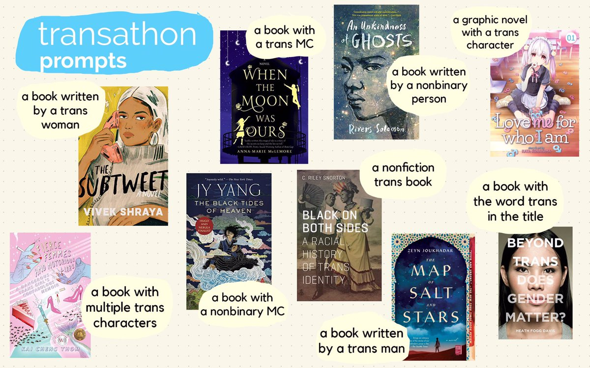

READATHON TBR
Transathon TBR!
JUNE 27, 2020
This is the readathon I have always been waiting for, and I am so glad someone finally created it! (Thank you, Ocean!) I have tons of trans books on my tbr (and I even have an entire separate trans-tbr list). Some of these books I have wanted to read for years, some I have only just found out about, but I am super excited to read them all!
For more information on this readathon, go to the official Transathon twitter account!
The bingo board has nine prompts, and I am planning to read a book for each prompt! I have been averaging about 20 books per month this year, so finishing nine books shouldn't be too overwhelming for me (hopefully)!
a book written by a trans woman
The Subtweet by Vivek Shraya

Synopsis: Everyone talks about falling in love, but falling in friendship can be just as captivating. When Neela Devaki’s song is covered by internet-famous artist Rukmini, the two musicians meet and a transformative friendship begins. But as Rukmini’s star rises and Neela’s stagnates, jealousy and self-doubt creep in. With a single tweet, their friendship implodes, one career is destroyed, and the two women find themselves at the center of an internet firestorm.
This is Vivek Shraya's second novel, and she has written many other books, but this will be my first time reading her work. I have heard pretty mixed reviews about The Subtweet, and I'm interested in seeing how my response to the book will compare! Also, I just love this cover and, at just over 200 pages, I think it will be a fairly quick read. No matter my response to this novel, I do not think it will be the last Shraya book I read.
a book written by a nonbinary person
An Unkindness of Ghosts by River Solomon

Synopsis: Aster, a social outcast, lives in the lower decks of the HSS Matilda, a space ship organized much like the antebellum South that has transported generations of humanity to a mythical Promised Land. On its way, the ship's leaders have imposed harsh moral restrictions and deep indignities on dark-skinned sharecroppers like Aster, who they consider to be less than human.
When the autopsy of Matilda's sovereign reveals a surprising link between his death and her mother's suicide some quarter-century before, Aster retraces her mother's footsteps. Embroiled in a grudge with a brutal overseer and sowing the seeds of civil war, Aster learns there may be a way off the ship if she's willing to fight for it.
I have wanted to read An Unkindness of Ghosts for about three years now, and it's embarassing that I haven't yet. The one time I tried picking it up, I did not have the mental energy to read an intense afrofuturist novel at the time and ended up dnfing it. Now, I am ready to throw myself into this world and fall in love with Aster's story. I read River Solomon's other novel, The Deep, and adored it. And from everything I've heard, I expect I'll adore this book, too.
a book written by a trans man
The Map of Salt and Stars by Zeyn Joukhadar

Synopsis: After the death of her father, Nour moves with her family from New York City back to Syria. But 2011 brings a summer of change, and it isn’t long before protests and shelling threaten their quiet Homs neighborhood. Soon, she and her family are forced to choose: stay and risk more violence or flee as refugees across seven countries of the Middle East and North Africa in search of safety. As their journey becomes more and more challenging, Nour’s idea of home becomes a dream she struggles to remember and a hope she cannot live without.
More than eight hundred years earlier, Rawiya, trying to help her impoverished mother and longing to see the world, leaves home at sixteen to seek her fortune. Disguised as a boy named Rami, she becomes an apprentice a cartographer commissioned to create a map of the world. Rawiya, as Rami, embarks on an epic journey across the Middle East and the north of Africa where she encounters ferocious mythical beasts, epic battles, and real historical figures.
Zeyn Joukhadar's second novel, The Thirty Names of Night, had its publishing date pushed back to November 3. So, although I'm disappointed I will have to wait a few more months to read his new book, I am excited to read his first book in the mean time!
a book with a trans MC
When the Moon was Ours by Anna-Marie McLemore

Synopsis: To everyone who knows them, best friends Miel and Sam are as strange as they are inseparable. Roses grow out of Miel’s wrist, and rumors say that she spilled out of a water tower when she was five. Sam is known for the moons he paints and hangs in the trees, and for how little anyone knows about his life before he and his mother moved to town. But as odd as everyone considers Miel and Sam, even they stay away from the Bonner girls, four beautiful sisters rumored to be witches. Now they want the roses that grow from Miel’s skin, convinced that their scent can make anyone fall in love. And they’re willing to use every secret Miel has fought to protect to make sure she gives them up.
I have never read any of Anna-Marie McLemore's books, and I need to change that immediately! All of their books interest me, but I hope When the Moon was Ours is a good one to start with. I have heard mixed reviews of the trans rep, and am excited to meet Sam myself. I am looking forward to finally reading this, and many more of McLemore's works!
a nonfiction trans book
Black on Both Sides: A Racial History of Trans Identity by C Riley Snorton

Synopsis: The erasure of African American's lived experiences from trans history masks the profound ways race has figured prominently in the construction and representation of transgender subjects. C. Riley Snorton identifies multiple intersections between Blackness and transness from the mid-nineteenth century to present-day anti-Black and anti-trans legislation and violence. Snorton reconstructs these theoretical and historical trajectories to further our imaginative capacities to conceive more livable Black and trans worlds.
This notable text has been on my radar for months, and I finally have a copy of it! I love reading trans history and memoirs by trans people, but they are overwhelmingly white. (This also is a reflection of the overwhelming whiteness of the publishing industry). Binary understandings of gender are a colonial legacy, and the reality that white trans stories have easier access to sharing their stories doubles down on that same legacy. Talking about gender without also talking about race is barely skimming the surface of decolonizing our ways of thinking. I already know this text is incredibly important, and I haven't even opened it up yet. I can't wait to read and unlearn and spread the knowledge with others!
a book with a nonbinary MC
The Black Tides of Heaven by Jy Yang

Synopsis: A rebellion is growing, and Akeha is disillusioned by the power of the Protector, who also happens to be his mother. Unwilling to continue to play a pawn in his mother's twisted schemes, Akeha leaves his twin sister, Mokoya, behind and falls in with the rebels. But as he takes steps towards doing what he believes is right, he is also stepping away from Mokoya. Can Akeha find peace without shattering the magical bond he shares with his twin sister?
I was supposed to read this with Stars and Sorcery (a reading group dedicated to SF/F by authors of color) in April, but unfortunately did not get around to it. Even though I am too late to participate with the book club, I am still very excited to start this series.
The Black Tides of Heaven is one book of a two-part introduction to Jy Yang's Tensorate series. Where this one follows Akeha, The Red Threads of Fortune follows his twin, Mokoya. Each novella seems incredibly compelling and I'm intrigued by how they challenge the form of traditional fantasy series. Although I only have the first book in the series on my TBR, I do not doubt I will be reading more than just one.
a book with multiple trans characters
Fierce Femmes and Notorious Liars by Kai Cheng Thom

Synopsis: A young Asian trans girl, pathological liar, and kung-fu expert runs away from her parents’ abusive home in a rainy city called Gloom. Striking off on her own, she finds her true family in a group of larger-than-life trans femmes who live in a mysterious pleasure district known only as the Street of Miracles. Under the wings of this fierce and fabulous flock, Dearly blossoms into the woman she has always dreamed of being, with a little help from the unscrupulous Doctor Crocodile. When one of them is brutally murdered, the protagonist joins her sisters in forming a vigilante gang to fight back against the transphobes, violent johns, and cops that stalk the Street of Miracles. But when things go terribly wrong, she must find the truth within herself in order to stop the violence and discover what it really means to grow up and find your family.
A story about a found family of trans women uplifting each other and fighting bigots, especially one that's sort of "based on a true story", is everything I've ever wanted in a book. I haven't read any of Kai Cheng Thom's work before, but so many of them seem so amazing and I'm really excited to throw myself into her work! From just the synopses, I am already very intrigued by the way she engages with speculative fiction and poetry and her own lived experiences. She definitely might be a prospective new favorite author.
a book with the word trans in the title
Beyond Trans: Does Gender Matter? by Heath Fogg Davis

Synopsis: Whether on birth certificates or college admissions applications or on bathroom doors, why do we need to mark people and places with sex categories? Do they serve a real purpose or are these places and forms just mechanisms of exclusion? Heath Fogg Davis offers an impassioned call to rethink the usefulness of dividing the world into gendered spaces. Davis, himself a transgender man, explores the underlying gender-enforcing policies and customs in American life that have led to transgender bathroom bills, college admissions controversies, and more, arguing that it is necessary for our society to take real steps to challenge the assumption that gender matters.
He examines four areas where we need to re-think our sex-classification systems: sex-marked identity documents such as birth certificates, driver's licenses and passports; sex-segregated public restrooms; single-sex colleges; and sex-segregated sports. Speaking from his own experience and drawing upon major cases of sex discrimination in the news and in the courts, Davis presents a persuasive case for challenging how individuals are classified according to sex and offers concrete recommendations for alleviating sex identity discrimination and sex-based disadvantage.
I have had my eye on Beyond Trans for over three years, and in those three years my personal experience and opinions of gendered spaces has changed immensely. I think Heath Fogg Davis's work will vocalize a lot of criticisms I haven't found a way to put into words, encourage me to reflect on my experience, and help me start discussions I find intimidating. Even just the title has prompted a lot of thought from me already!
a graphic novel with a trans character
Fukakai na Boku no Subete O (Love Me For Who I Am) by Kata Konayama

Synopsis: Mogumo is a cute but lonely high school student who just wants a few loving friends. Fellow student Iwaoka Tetsu invites Mogumo to work at his family’s café for “cross-dressing boys,” but he makes an incorrect assumption: Mogumo is non-binary, not a girl or a boy. However, Mogumo soon finds out that the café is run by all kinds of LGBT+ folks with their own reasons for congregating there. This touching manga explores gender, gender presentation, and sexuality from many different angles, including the ways people are pushed to conform in a world that doesn’t understand them...until the world begins to learn, one person at a time.
I have heard amazing things about this manga and am very excited to read it! LGBT+ rep in manga often face unjustified criticism, which is frankly just racist and hypocritical. Western comics are no better (often they are worse). And, western culture does not have a monopoly on LGBT+ people. So, I'm excited to read this and have yet another amazing manga I can recommend to people.
I am super excited to read all of these books and am dedicating myself to actually finishing them all in July. I am more of a mood reader, so it is rare that I actually follow my TBR, but I believe in myself to actually stick to my list this time! If you would like to see my livetweeting, or talk about any of these picks, or want to talk about other trans books, or contact me for anything else, follow me on Twitter.